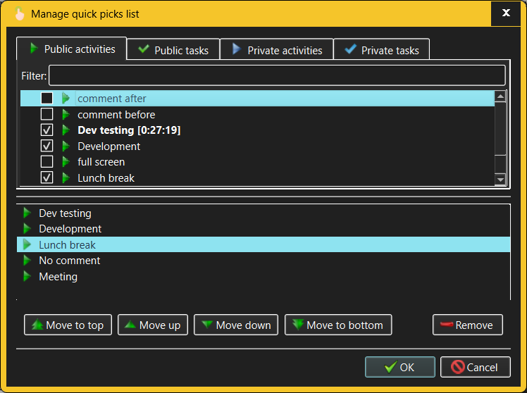

Manage Quick Picks List dialog
The Manage Quick Picks List dialog allows the user to set up and maintain the
list of "quick picks" - Activities and Tasks that are most frequently needed
during the daily work and which the user shall be able to start and stop
recording with minimum fuss.

The fields in the Manage Quick Picks List dialog are used to the following
effect:
- In the upper half of the dialog there are lists of all Activities and
Tasks available to the currently logged in user, both Public and Private.
Use the tabs to switch between different Activity/Task categories.
- In the lower half of the dialog is the user's current Quick Picks list.
Items can be added to or removed from the Quick Picks list by checking or
unchecking individual Activities and Tasks from the lists of available
Activities and Tasks.
- Each list of available Activities/Tasks comes with a filter field, which
acts in a manner similar to the filters in all other TimeTracker3 views -
typing anything in this field will restrict the visible list items to those
which match the filter anywhere in their names.
- The Quick Picks List is ordered for convenience, because some Quick
Picks Activities or Tasks are e.g. more frequently used that the others. The
ordering buttons below the Quick Picks List allow moving the currently
selected item within the Quick Picks List.
Any user is always permitted to set up and manage the Quick Picks List of the
Account used for logging into TimeTracker3. Changes to Quick Picks List take
effect immediate after the OK button is pressed to confirm the user's changes
and close the dialog.
See also: -